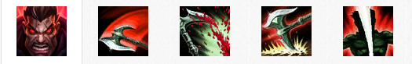

背景故事
提到诺克萨斯力量的象征，没有人能比德莱厄斯这名城邦中最让人畏惧和久经沙场的战士更加适合了。自幼失去双亲的德莱厄斯，为了让他自己和弟弟活下去，不得不进行战斗。到他加入军队的时候，他已经练就出了如同身经百战的老练士兵一般的力气和纪律性。德莱厄斯决心的首次真正考验，出现在一次对抗德玛西亚的决定性战斗中。那里的诺克萨斯军队疲惫不堪，且数量处于劣势。德莱厄斯的长官下令，让他的部队撤退，但德莱厄斯拒绝接受如此怯懦的行为。德莱厄斯脱离编队，大步迈向长官，并用手中的巨斧削掉了这个胆小鬼的脑袋。既惶恐不已又备受鼓舞的士兵们跟着德莱厄斯冲进了战斗，并用难以置信的力气与热情进行战斗。在一场艰苦漫长的战斗之后，他们终于迎来了胜利的曙光。
德莱厄斯从这次胜利中获取了动力，并带领着现有的勇猛且忠诚的部队参加了一个对抗德玛西亚的毁灭性战役。在战场上证明了他的实力之后，德莱厄斯将他的目光转向了故乡。他看到了一个千疮百孔的诺克萨斯，贪得无厌、洋洋自得的贵族们耗尽了城邦的国力。为了让他的祖国重振雄风，德莱厄斯毅然决定亲自重塑诺克萨斯的领导阶层。他一旦发现尸位素餐、虚有其表的傀儡权贵，就会用暴力手段将他们从权位上移除。大部分人将德莱厄斯的清洗行动看成是篡权的一种尝试，但他对王位有着一个截然不同的计划。他曾经怀着强烈的兴趣目睹了杰里柯丶斯维因的崛起。在斯维因身上，德莱厄斯看到了一个有着带领诺克萨斯通向荣耀的头脑与决心的领袖。现在，与策士统领结盟的德莱厄斯，正在为了将整个城邦团结在一起，从而让诺克萨斯展现真正实力的愿景而奋斗不已
技能介绍
出血(被动)
德莱厄斯策略性地运用他的攻击，让目标流血不止。这个效果最多可叠加5次。敌人身上的【出血】效果到达最大层数时，会让德莱厄斯获得【诺克萨斯之力】，极大地提升他的伤害。
大杀四方)
快捷键：Q在短暂的延迟后，德莱厄斯环绕自身挥舞斧头，打击附近的敌人。被斧刃（技能指示器外环）命中的敌人会受到40/70/100/130/160 (+1.05)物理伤害。
被斧柄（技能指示器内环）命中的敌人只会受到前者50%的伤害(不会施加【出血】效果).德莱厄斯每用斧刃命中一名敌方英雄，就会治疗自身15%的已损失生命值(最大值： 30%)。
- 伤害：40/70/100/130/160
- 冷却时间：9/8/7/6/5
致残打击
快捷键：W德莱厄斯的下次普攻造成物理伤害，并使目标减速90%，持续1秒。如果【致残打击】击杀了目标，那么会返还此技能的法力消耗和50%的冷却时间。
- 墙的宽度：300/350/400/450/500
- 冷却时间：9/8/7/6/5
无情铁手
快捷键：E被动：德莱厄斯获得5/10/15/20/25%护甲穿透。
在10/9/8/7/6秒内无法对相同敌人重复施放。
主动：将锥形范围内的所有敌人都拉到德莱厄斯的面前，并使这些敌人减速90%，持续1秒。
- 护甲穿透：5/10/15/20/25%
- 冷却时间：24/21/18/15/12
诺克萨斯断头台
快捷键：R跃向目标英雄并进行致命打击，造成100/200/300(+0.75)点真实伤害。 目标身上的每层出血效果，都会使【诺克萨斯断头台】额外造成20%的伤害。
最大伤害值：100,200,300
如果【诺克萨斯断头台】击杀了目标，那么它可以在20秒内无消耗地再次施放。
在3级时，【诺克萨斯断头台】会解除封印——它的冷却时间会在击杀时完全重置，并且不再耗费法力。
- 伤害：100/200/300
- 冷却时间：120/100/80
使用技巧
- 【大杀四方】是一个非常强力的压制技能。用它的最大作用距离打击敌人时，效果是最好的 。
- 你对目标施加的【出血】效果越多，【诺克萨斯断头台】的伤害越高。使用【诺克萨斯之力】来造成最大伤害。
- 提高生存能力可以让德莱厄斯获得极大的收益。战斗持续得越久，他就变得越强力。
- 敌人使用诺克萨斯之手/dt>
- 当德莱厄斯的无情铁手处于冷却过程中时，你可以轻易地对他进行压制。
- 德莱厄斯的脱战能力极度有限。如果你在对抗他时占据了优势，就将他拖进你的节奏吧。